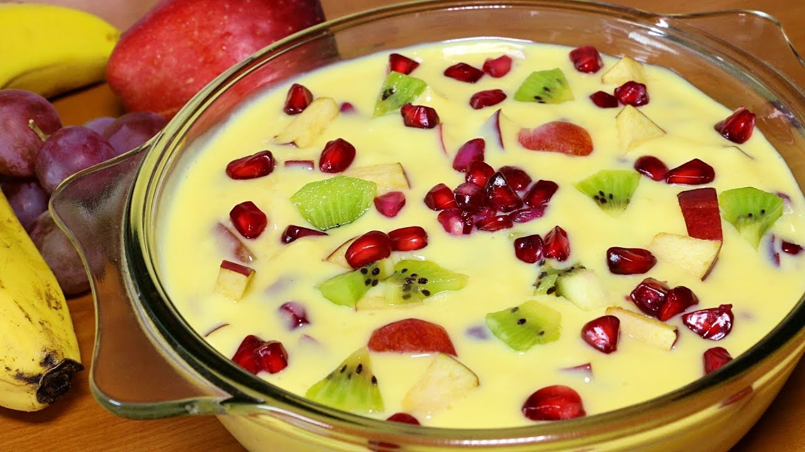

Custard - A Delicious Sweet

Description of Custard
Custard is a creamy culinary creation made by blending milk or cream with eggs and sugar. It can be baked, as in
crème brûlée, or stirred on the stove-top for variations like vanilla custard.
The result is a smooth, velvety texture that serves as a base for desserts such as pies, puddings, and pastries.
Ingredients Required
- Milk or Cream
- Eggs
- Sugar
- Flavouring/ Extract
- Cornflour
Procedure to Prepare Custard
- Prepare the Ingredients
- Gather and measure all the ingredients before starting to ensure a smooth cooking process.
- Mix Egg Yolks and Sugar
- In a mixing bowl, whisk together the egg yolks and sugar until the mixture becomes pale and slightly thickened.
- Add Cornstarch
- Sprinkle the cornstarch over the egg yolk mixture and whisk until well combined. This helps thicken the custard.
- Heat Milk
- In a saucepan, heat the milk over medium heat until it just begins to simmer. Do not boil.
- Temper the eggs
- Slowly pour a small amount of the hot milk into the egg mixture while whisking continuously. This tempers the eggs, preventing them from curdling.
- Combine Mixtures
- Gradually pour the tempered egg mixture back into the saucepan with the remaining hot milk, whisking constantly to combine.
- Cook Custard
- Cook the mixture over medium heat, stirring continuously with a wooden spoon or silicone spatula. Continue until the custard thickens enough to coat the back of the spoon.
- Remove from Heat
- Once the custard reaches the desired thickness, remove the saucepan from heat.
- Add Vanilla and Salt
- Stir in the vanilla extract and a pinch of salt, combining well.
- Cool and Chill
- Allow the custard to cool slightly before transferring it to a bowl or individual serving dishes.
- Cover the custard with plastic wrap, ensuring it touches the surface to prevent a skin from forming. Refrigerate until fully chilled.